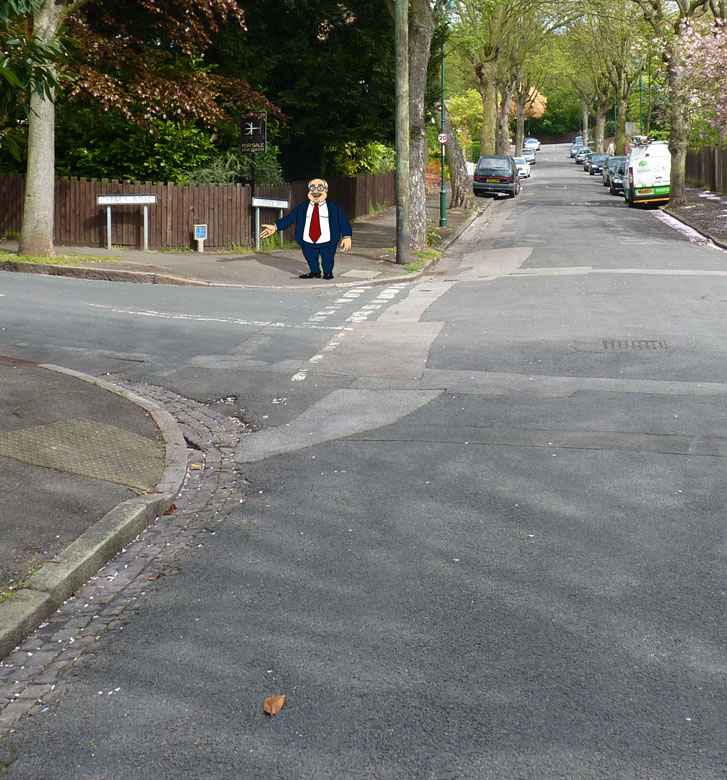
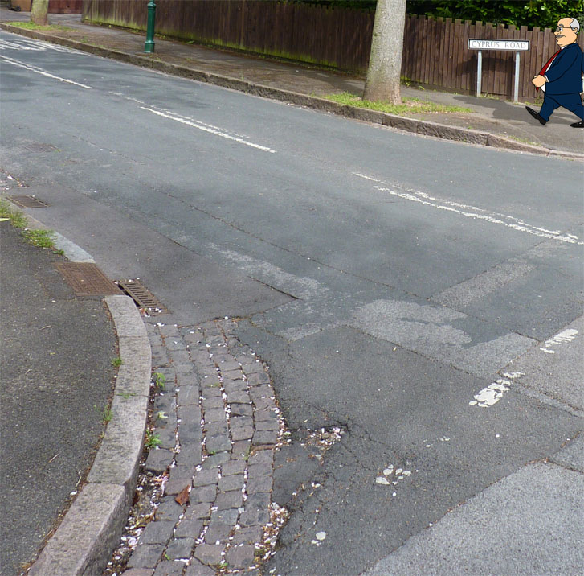
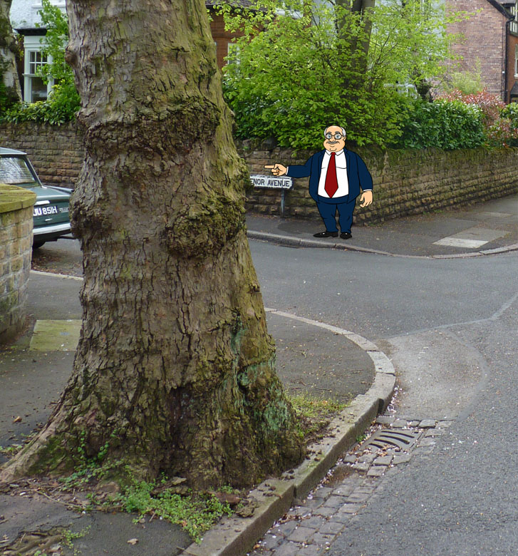
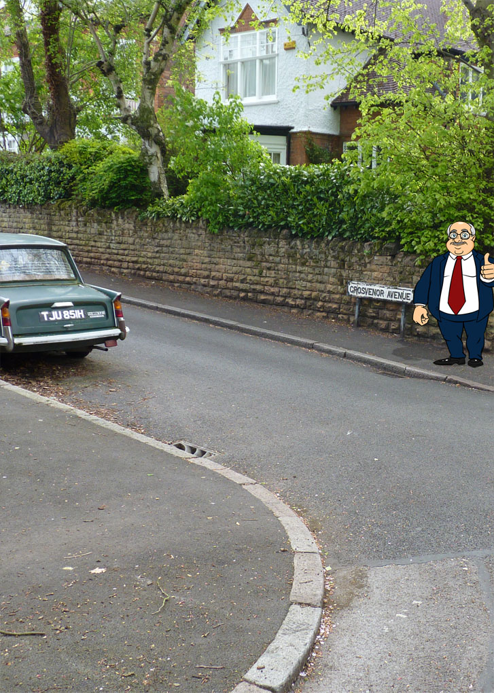

If you're not sure how wide the junction is, keep slowing down on the approach until your view is improved. As you draw closer you can decide which gear will suit your speed.
Going too fast for the corner and swinging wide could be very dangerous. Going a little slowly is not likely to be such a problem.


You may notice parked cars as you approach the corner. In this case a slower approach and first gear might be appropriate.
